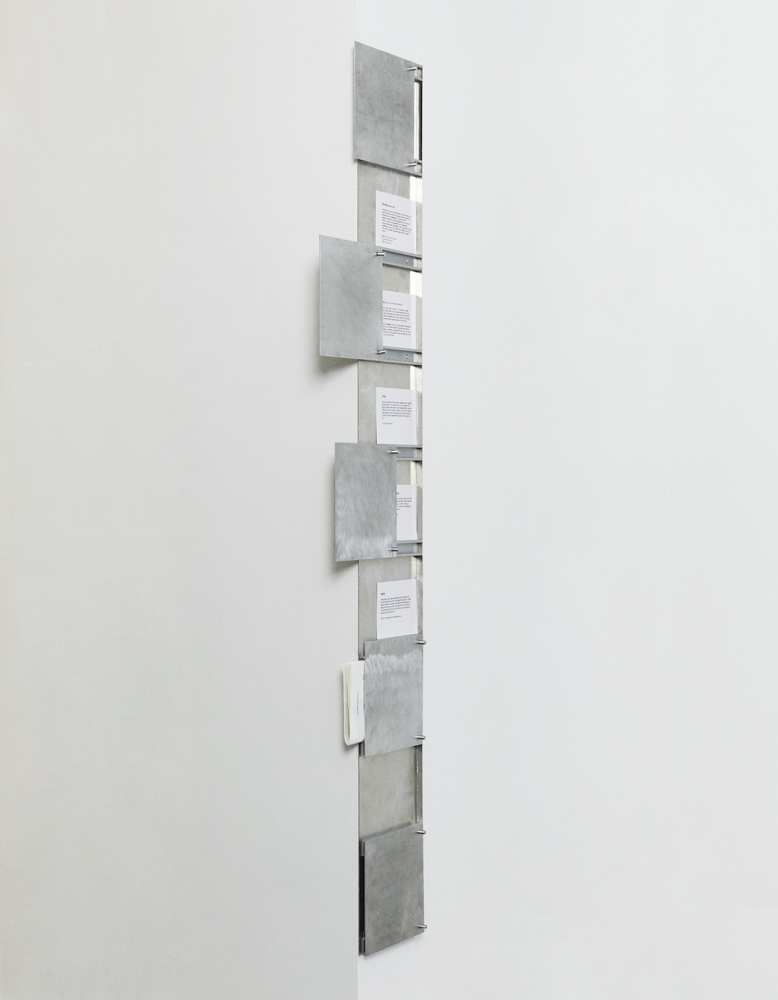
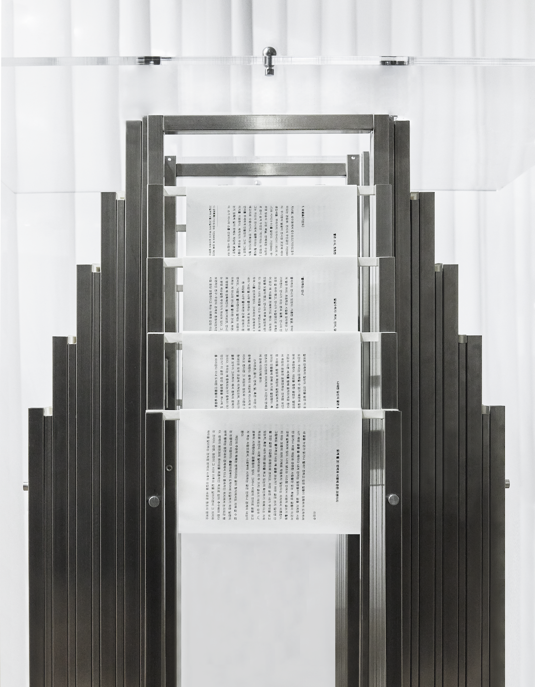
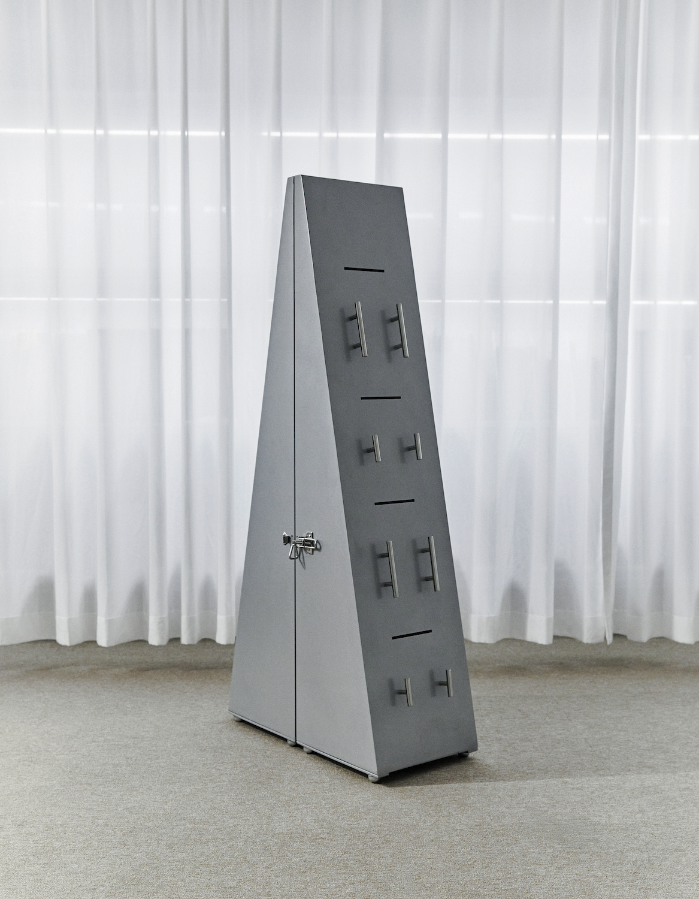

| Hypithesis Furniture | |||
|---|---|---|---|
| ... | |||
| +82 1091395405 | eunji.wang.0@gmail.com | wang.eunjj@instagram | (website) |
| Pieces | Description | Contents |
|---|---|---|
|

|
Hide & Seek shelf |
Read the work journal.The Hide&Seek Shelf is a bookshelf featuring a front-facing sliding door that moves along the shelf’s facade.As the door shifts, it reveals or conceals varying portions of text, guiding the viewer’s gaze in a playful, hide-and-seek manner. It functions as a visual device that captures and directs attention. As the front panel slides across the shelf, it alters the amount of visible text—inviting curiosity and engagement from the viewer. |
| 210x20x1700 mm | ||
| Aluminium | ||
| Parts of. T-track | ||
|  | Doorpin table | Read the work journal.The book’s spine, like a backbone, binds individual sheets into a single, solid volume. Its curve reveals itself as a pattern beneath the table. Under the table, vertical steel pipes intersect with horizontal paper pipes, and at their crossing point lies a manuscript—its spine visible just below the tabletop, meeting the reader’s gaze first. |
| 850x850x1100 mm | ||
| Stainless steel, Arcylic | ||
| Parts of. Doorpin | ||
|  | Two pieces cabinet | Read the work journal.The two-piece cabinet is a text receptacle that opens and closes. Beneath the manuscripts on display, a subtle slit invites new texts to be inserted. Once inside, the texts remain stored—until the closing day of the exhibition, when the cabinet opens, and circulation begins. |
| 700x1300x300 mm | ||
| Steel, Polycabanate | ||
| Parts of. piano hinge | ||